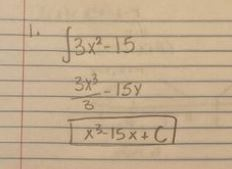
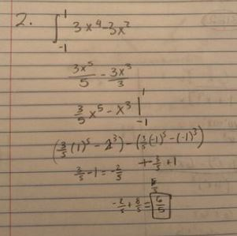

| Limits with Algebraic Manipulation | Chain Rule | Extreme Value Theorem | Right Riemann Sums | Antiderivatives | Volumes of solids (Washer Method) | Solve the case! | Back to Home Page |
Made by: Kara Ho and Akshita Ramesh, AP Calculus Block 5, Mrs. Burns' Class
Welcome to your fourth mission: Antiderivatives! Here's a brief overview of what you'll need to do to complete your mission:
Antiderivatives, more commonly known as integrals, are used to find the area under a graph. These are mostly used for finding the total amount of something, stemming from a rate, over a certain amount of time. An example of the use of an anti-derivative is finding the total number of cars entering a parking lot using a fixed rate.
An antiderivative is very self-explanatory. To find one, you work backwards from a derivative. For example, the derivative of x^2 is 2x, and the antiderivative of 2x is x^2, an example of the reverse power rule. Let's try some practice problems! Don't worry, we'll help you out.1. Find the antiderivative of this function, f(x)=3x²-15
2. What is the total area under the graph f(x)= 3x⁴-3x² from –1 ≤ x ≤ 1
To see how the questions are solved, see the procedures below!
|  |  |
Lets try a multiple choice question on your own this time. You've got this! You can check your answer by clicking on the picture to the right.
|
|
|
Now lets try a free-response question! To check your answers, click the picture on the right

|
 |